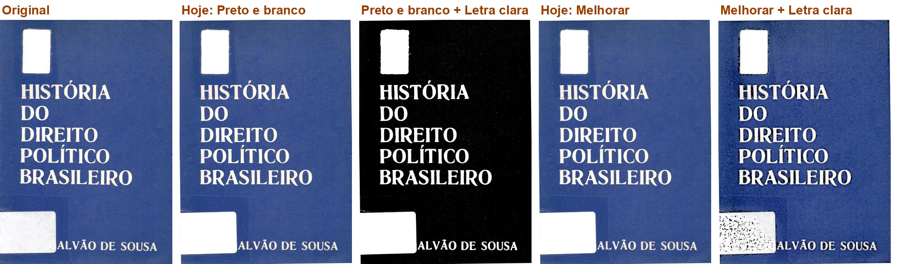
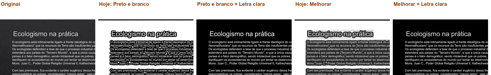
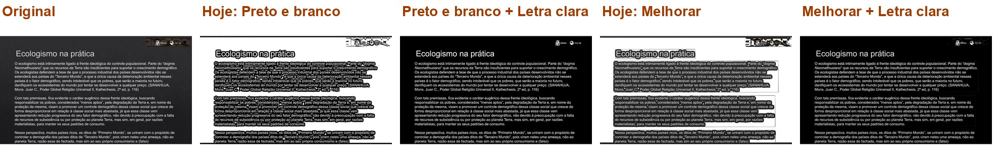
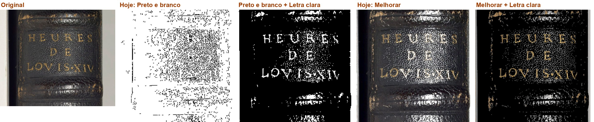
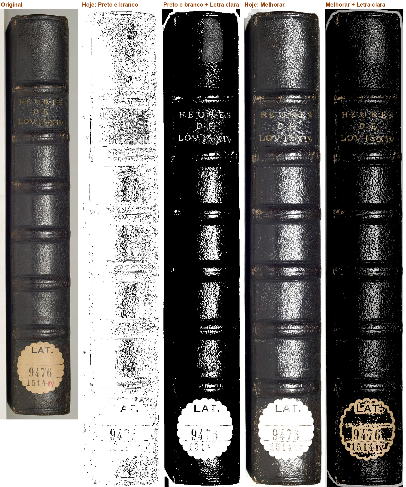
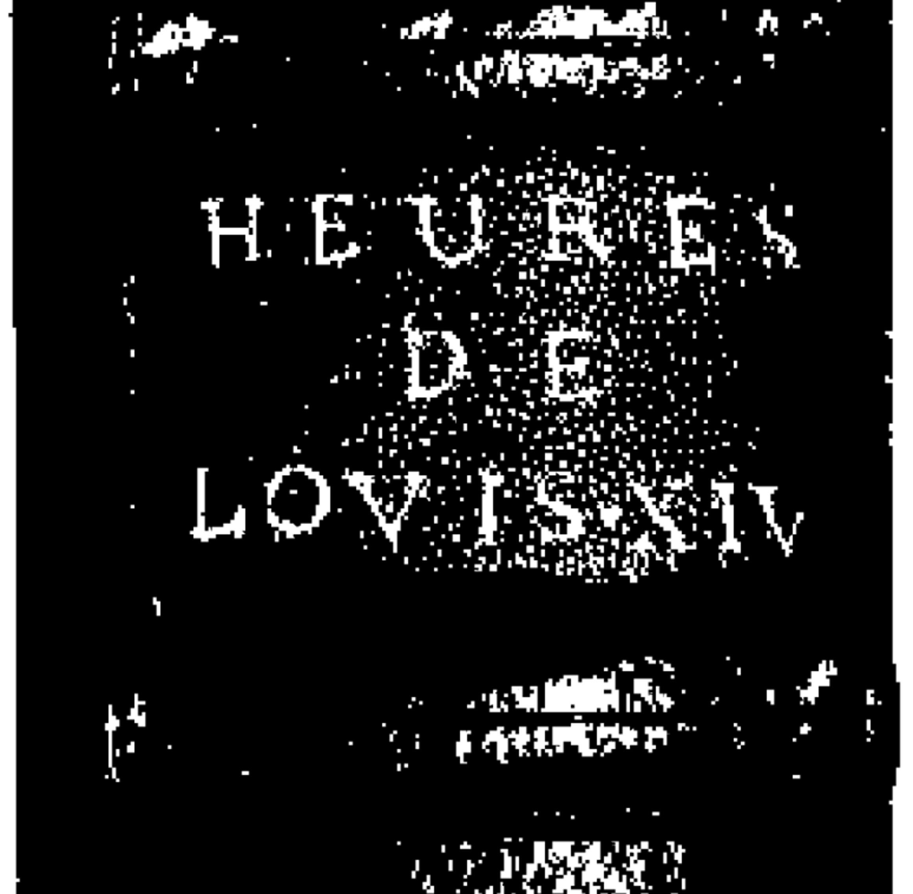
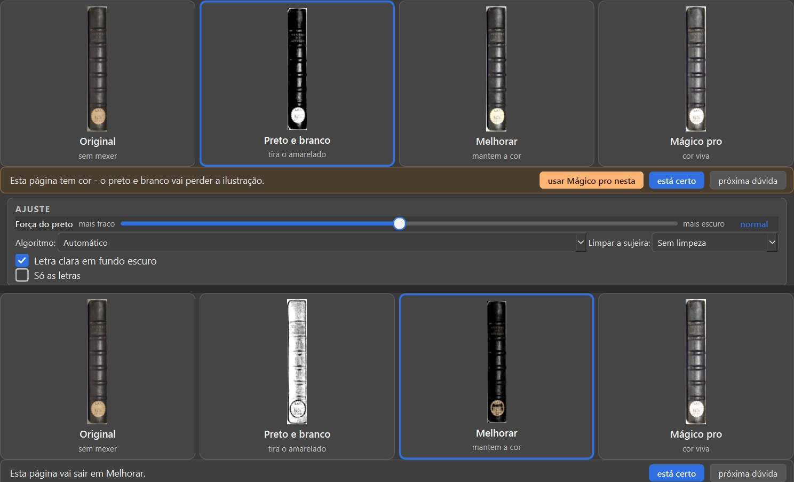
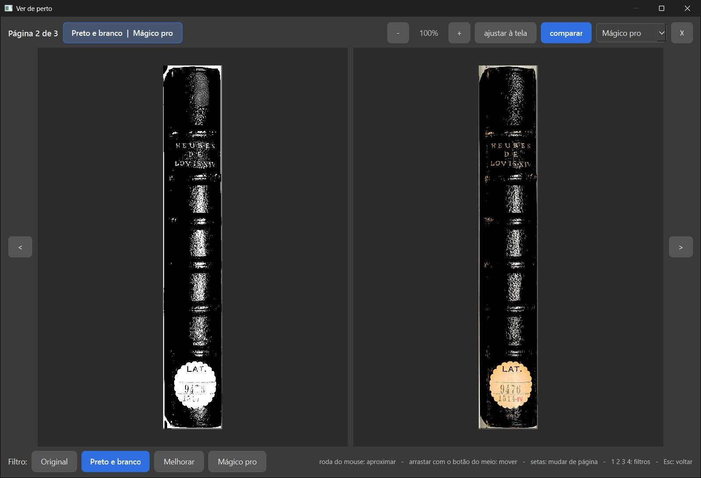

Ramo fase2-scantailor-itens-2026-10-19, código 0f4ee58, contra o fase-1 em b8e9af7. Não mudei código; não marco nada como aprovado.
NÃO ESTÁ PRONTO, por um defeito de tela: com a caixinha marcada, os cartões dos filtros que não estão escolhidos mostram a página sem inverter, e o que se escolhe não é o que o cartão mostrava (ui/tarefas.py _TarefaCartoes.run chama aplicar_filtro direto, sem claro_no_escuro). O resto está certo: fábrica igual (128 de 128), a conta igual à do ScanTailor, o PDF sai invertido e o "Ver de perto" compara certo.
| O que | Como | Resultado |
|---|---|---|
Desligado de fábrica: somas das 32 páginas-gabarito em Original, Preto e branco, Melhorar e Preto e branco com "Só as letras" (scripts/somas.py, uma página por processo; lado antigo = o que medi no 2.8) |
máquina | iguais: 128 de 128 |
| A conta igual à do ScanTailor | código | inverte na entrada e no fim, como OutputGenerator.cpp 1245-1249, 1344-1346, 1370-1372, 1497-1499 (conferido no arquivo de referência); Original e "Tirar o fundo" não passam por ela |
Testes do implementador (test_claro_no_escuro.py, ..._na_tela.py) |
máquina | 13 passaram |
| Janela de verdade (Livro de Horas 186-188, tela nova) | olho | a caixinha aparece no AJUSTE (some no Original); marcar grava ação no desfazer; o cartão escolhido inverte; os outros cartões não; "Ver de perto" compara certo; o PDF sai com letra branca em fundo preto (12 s, erros.log vazio) |
| Páginas de verdade | procura minha (scripts/procurar.py, 320 livros de D:\Livros para editar e das pastas de teste; parei antes do fim) |
achei casos melhores que a lombada: a capa do "História do Direito Político Brasileiro" e slides do "O meio ambiente hoje" (texto branco em fundo escuro) |
| Antes/depois | scripts/antes_depois.py (caminho do programa, 300 DPI) |
três páginas, abertas: ver os quadros |
| Velocidade | - | não rodei (desligada de fábrica) |
ui/tarefas.py _TarefaCartoes.run).O que você está escolhendo: se a caixinha faz o que você pediu numa capa de letra branca em fundo escuro.
Caso real: a capa do "História do Direito Político Brasileiro". Hoje o Preto e branco não mexe nela (fica igual ao original). Com a caixinha, sai letra branca em fundo preto puro, limpa, como o ScanTailor faz.
Cada foto: a página como sai no PDF, sem a caixinha ("Hoje") e com a caixinha marcada, em Preto e branco e em Melhorar. A caixinha vem desmarcada: livro já começado sai igual.
O que olhar: O título: em Preto e branco com a caixinha, branco limpo no fundo preto.
Opções: Está bom · Melhorar · Está pior · Ainda não entendi · e um comentário.

Original, Hoje (Preto e branco), Preto e branco com a caixinha, Hoje (Melhorar), Melhorar com a caixinha
O que você está escolhendo: se a caixinha resolve as páginas de texto claro em fundo escuro.
Caso real: um slide do "O meio ambiente hoje". Hoje o Preto e branco desenha só o contorno das letras, como letra vazada, com borrões; com a caixinha, o texto sai branco e inteiro no fundo preto.
Cada foto: a página como sai no PDF, sem a caixinha ("Hoje") e com a caixinha marcada, em Preto e branco e em Melhorar. A caixinha vem desmarcada: livro já começado sai igual.
O que olhar: As letras: vazadas no "Hoje", inteiras com a caixinha.
Opções: Está bom · Melhorar · Está pior · Ainda não entendi · e um comentário.

Ampliado: o título e os parágrafos, nas cinco versões

O slide inteiro
O que você está escolhendo: se está bom o resultado na lombada (a página que o implementador achou).
Caso real: o título dourado "HEURES DE LOVIS XIV" na lombada escura. Hoje o Preto e branco vira uma página quase branca, sem título. Com a caixinha o título aparece em branco, mas o couro brilhante vira muitas manchas brancas.
Cada foto: a página como sai no PDF, sem a caixinha ("Hoje") e com a caixinha marcada, em Preto e branco e em Melhorar. A caixinha vem desmarcada: livro já começado sai igual.
O que olhar: O título dourado e o brilho do couro.
Opções: Está bom · Melhorar · Está pior · Ainda não entendi · e um comentário.

Ampliado: o título na lombada

A lombada inteira

O PDF gerado na janela de verdade, com a caixinha: letra branca no fundo preto
O que você está escolhendo: se isto precisa ser consertado antes de aprovar.
Caso real: com a caixinha marcada, só o cartão do filtro escolhido mostra a página invertida; os outros cartões ("A mesma página nos quatro filtros") mostram como se a caixinha estivesse desmarcada. Clicando no cartão Melhorar, que mostrava a lombada cinza, a página sai preta.
A tela "Ver de perto", no "comparar", mostra certo.
O que olhar: Em cima: o cartão Melhorar cinza. Embaixo, depois de clicar nele: preto.
Opções: Está bom · Melhorar · Está pior · Ainda não entendi · e um comentário.

Em cima: caixinha marcada, filtro Preto e branco. Embaixo: depois de escolher o Melhorar

"Ver de perto", comparar: o Melhorar com a caixinha, certo
O que você está escolhendo: se esta entrega entra no programa.
Você pediu em 05/10 (P9 (a)): "Uma caixinha por página, 'Letra clara em fundo escuro', que o Kaique marca à mão". Ela fica no AJUSTE da ferramenta Filtro, desmarcada. Igual ao ScanTailor: inverte a página, trata como letra escura em papel claro e inverte de novo no fim.
Falta consertar os cartões da tela (quadro acima) antes de aprovar.
Opções: Aprovado · Melhorar · Ainda não entendi
Editor de Impressão · gerado em 21/10/2026 às 03:15